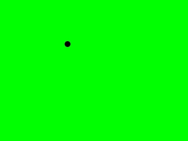

Game Saves

Last Updated 3/28/10
Ever wanted to know how to save data from your game? Whether saving settings or progress in a game you need to know file input/output. This program will save the background type and the dot's offsets. So when we start the program up again the dot and background will be the same as when we closed the program.Here's yet another incarnation of the motion tutorial to show you how to get input and output from a file to save/load game data.
#include "SDL/SDL.h" #include "SDL/SDL_image.h" #include <string> #include <fstream>
You need to include the fstream header to read/write a file. It's a standard library and not part of SDL.
//The dot
class Dot
{
private:
//The X and Y offsets of the dot
int x, y;
//The velocity of the dot
int xVel, yVel;
public:
//Initializes the variables
Dot();
//Takes key presses and adjusts the dot's velocity
void handle_input();
//Moves the dot
void move();
//Shows the dot on the screen
void show();
//Set the dot's x/y offsets
void set_x( int X );
void set_y( int Y );
//Get the dot's x/y offsets
int get_x();
int get_y();
};
Here's the Dot class yet again. The only real change here is that we added functions to get/set the x and y offsets.
bool load_files( Dot &thisDot, Uint32 &bg )
{
//Load the dot image
dot = load_image( "dot.png" );
//If there was a problem in loading the dot
if( dot == NULL )
{
return false;
}
//Open a file for reading
std::ifstream load( "game_save" );
In the load_files() function after we load our image we create an ifstream object.
ifstream allows you to get input from a file stream. When you pass a file name to the constructor, it opens the file for reading.
ifstream allows you to get input from a file stream. When you pass a file name to the constructor, it opens the file for reading.
//If the file loaded
if( load != NULL )
{
//The offset
int offset;
//The level name
std::string level;
//Set the x offset
load >> offset;
thisDot.set_x( offset );
//Set the y offset
load >> offset;
thisDot.set_y( offset );
When there's a problem in loading the file, the ifstream object will be NULL.
Here we check if the file loaded fine. If it loaded fine, we declare "offset" to retrieve the offsets and "level" which we'll use to determine how to set the background.
Then we get first integer from the file and set the x offset of the dot. Then we get another integer and use it to set the y offset. As you can see, we get integers with ifstreams the same way we would with cin. That's because they're both istreams (input streams).
The contents of the "game_save" file will be something like this:
0 0
White Level
Seeing as the file and what we enter in console apps are just characters it makes sense to treat them almost the same.
Here we check if the file loaded fine. If it loaded fine, we declare "offset" to retrieve the offsets and "level" which we'll use to determine how to set the background.
Then we get first integer from the file and set the x offset of the dot. Then we get another integer and use it to set the y offset. As you can see, we get integers with ifstreams the same way we would with cin. That's because they're both istreams (input streams).
The contents of the "game_save" file will be something like this:
0 0
White Level
Seeing as the file and what we enter in console apps are just characters it makes sense to treat them almost the same.
//If the x offset is invalid
if( ( thisDot.get_x() < 0 ) || ( thisDot.get_x() > SCREEN_WIDTH - DOT_WIDTH ) )
{
return false;
}
//If the y offset is invalid
if( ( thisDot.get_y() < 0 ) || ( thisDot.get_y() > SCREEN_HEIGHT - DOT_HEIGHT ) )
{
return false;
}
We also have to check if the offsets from the file are valid considering the user can easily alter the file.
//Skip past the end of the line
load.ignore();
//Get the next line
getline( load, level );
//If an error occurred while trying to load data
if( load.fail() == true )
{
return false;
}
Then we skip past the next character (which is a '\n') with the ignore() function. Then we get the next line and store it with the getline() function. getline() is a different from using >> in that it gets everything up until the end of the line.
For you guys still using Visual C++ 6.0 you'll have to std::getline().
Then we check if there was a problem in reading from the file. The fail() function will return true when there's a problem.
For you guys still using Visual C++ 6.0 you'll have to std::getline().
Then we check if there was a problem in reading from the file. The fail() function will return true when there's a problem.
//If the level was white
if( level == "White Level" )
{
//Set the background color
bg = SDL_MapRGB( screen->format, 0xFF, 0xFF, 0xFF );
}
//If the level was red
else if( level == "Red Level" )
{
//Set the background color
bg = SDL_MapRGB( screen->format, 0xFF, 0x00, 0x00 );
}
//If the level was green
else if( level == "Green Level" )
{
//Set the background color
bg = SDL_MapRGB( screen->format, 0x00, 0xFF, 0x00 );
}
//If the level was blue
else if( level == "Blue Level" )
{
//Set the background color
bg = SDL_MapRGB( screen->format, 0x00, 0x00, 0xFF );
}
Now that we have our level string, we set the background color accordingly.
//Close the file
load.close();
}
//If everything loaded fine
return true;
}
After we're done reading from the file we close it.
void clean_up( Dot &thisDot, Uint32 &bg )
{
//Free the surface
SDL_FreeSurface( dot );
//Open a file for writing
std::ofstream save( "game_save" );
//Write offsets to the file
save << thisDot.get_x();
save << " ";
save << thisDot.get_y();
save << "\n";
In the clean_up() function, we create a ofstream to write to a file. ofstream allows you to
output to a
file stream.
Since ifstream was similar to cin, it makes sense that ofstream is similar to cout.
In this piece of code we write the dot's offsets to a file.
Since ifstream was similar to cin, it makes sense that ofstream is similar to cout.
In this piece of code we write the dot's offsets to a file.
//The RGB values from the background
Uint8 r, g, b;
//Get RGB values from the background color
SDL_GetRGB( bg, screen->format, &r, &g, &b );
Then we get the individual R, G and B values from the background using SDL_GetRGB().
//If the background was white
if( ( r == 0xFF ) && ( g == 0xFF ) && ( b == 0xFF ) )
{
//Write level type to the file
save << "White Level";
}
//If the background was red
else if( r == 0xFF )
{
//Write level type to the file
save << "Red Level";
}
//If the background was green
else if( g == 0xFF )
{
//Write level type to the file
save << "Green Level";
}
//If the background was blue
else if( b == 0xFF )
{
//Write level type to the file
save << "Blue Level";
}
After that, we write the level type.
//Close the file
save.close();
//Quit SDL
SDL_Quit();
}
Lastly, we close the file.
//Quit flag
bool quit = false;
//Initialize
if( init() == false )
{
return 1;
}
//The dot
Dot myDot;
//The background color
Uint32 background = SDL_MapRGB( screen->format, 0xFF, 0xFF, 0xFF );
//The frame rate regulator
Timer fps;
//Load the files
if( load_files( myDot, background ) == false )
{
return 1;
}
Here you see how we use our load_files() function.
//While the user hasn't quit
while( quit == false )
{
//Start the frame timer
fps.start();
//While there's events to handle
while( SDL_PollEvent( &event ) )
{
//Handle events for the dot
myDot.handle_input();
//If the user has pressed at key
if( event.type == SDL_KEYDOWN )
{
//Change background according to key press
switch( event.key.keysym.sym )
{
case SDLK_1: background = SDL_MapRGB( screen->format, 0xFF, 0xFF, 0xFF ); break;
case SDLK_2: background = SDL_MapRGB( screen->format, 0xFF, 0x00, 0x00 ); break;
case SDLK_3: background = SDL_MapRGB( screen->format, 0x00, 0xFF, 0x00 ); break;
case SDLK_4: background = SDL_MapRGB( screen->format, 0x00, 0x00, 0xFF ); break;
}
}
//If the user has Xed out the window
if( event.type == SDL_QUIT )
{
//Quit the program
quit = true;
}
}
//Move the dot
myDot.move();
//Fill the background
SDL_FillRect( screen, ≻reen->clip_rect, background );
//Show the dot on the screen
myDot.show();
//Update the screen
if( SDL_Flip( screen ) == -1 )
{
return 1;
}
//Cap the frame rate
if( fps.get_ticks() < 1000 / FRAMES_PER_SECOND )
{
SDL_Delay( ( 1000 / FRAMES_PER_SECOND ) - fps.get_ticks() );
}
}
Here's the main loop. To change the background, you press 1,2,3 or 4. When you start the program up again the dot and the background will be the same as you left it.
//Clean up and save
clean_up( myDot, background );
}
Lastly, we call our clean_up() function to clean and save the data.